OPÉRATIONS
OPÉRATIONS
Tableau de bord
/admin/dashboard
Objectif : Vue synthétique de l'activité réseau (courses, chauffeurs, indicateurs clés).
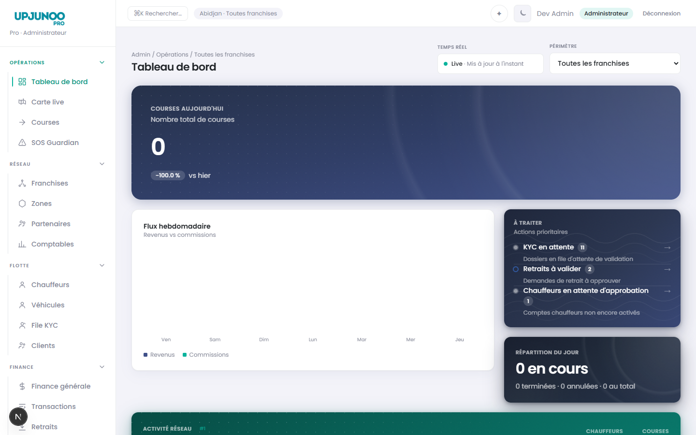
Capture — /admin/dashboard
Guide d'utilisation
- Consulter les KPI du jour : courses, chauffeurs en ligne, tendances.
- Accéder rapidement aux sections opérationnelles via le menu latéral.
OPÉRATIONS
Carte live
/admin/ops/map
Objectif : Suivre en temps réel la position des chauffeurs et l'activité sur la carte.
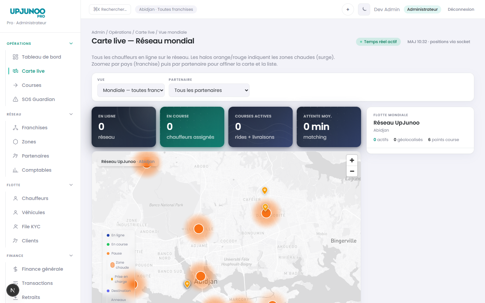
Capture — /admin/ops/map
Guide d'utilisation
- Zoomer / déplacer la carte pour explorer une zone.
- Cliquer sur un marqueur chauffeur pour voir son statut.
- Utiliser les filtres franchise / partenaire si disponibles.
OPÉRATIONS
Courses
/admin/ops/trips
Objectif : Lister, filtrer et ouvrir le détail de toutes les courses du réseau.
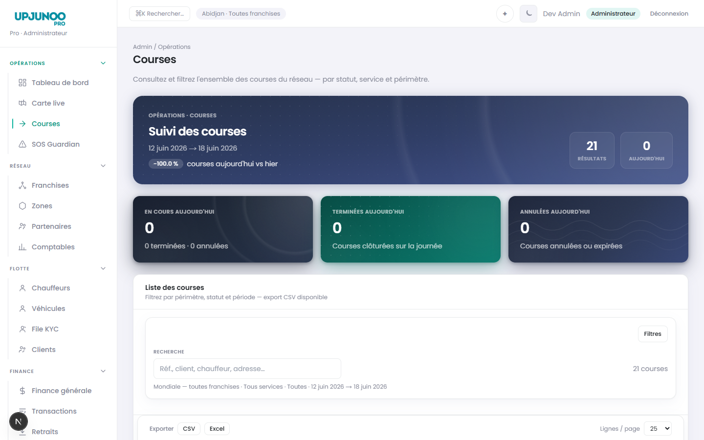
Capture — /admin/ops/trips
Guide d'utilisation
- Filtrer par statut, service, zone ou période.
- Cliquer sur une ligne pour ouvrir la fiche course (trajet, client, chauffeur, finance).
- Exporter la liste si besoin d'analyse externe.
OPÉRATIONS
Courses — détail route dynamique
/admin/ops/trips/[id]
Objectif : Écran courses — détail — /admin/ops/trips/[id]
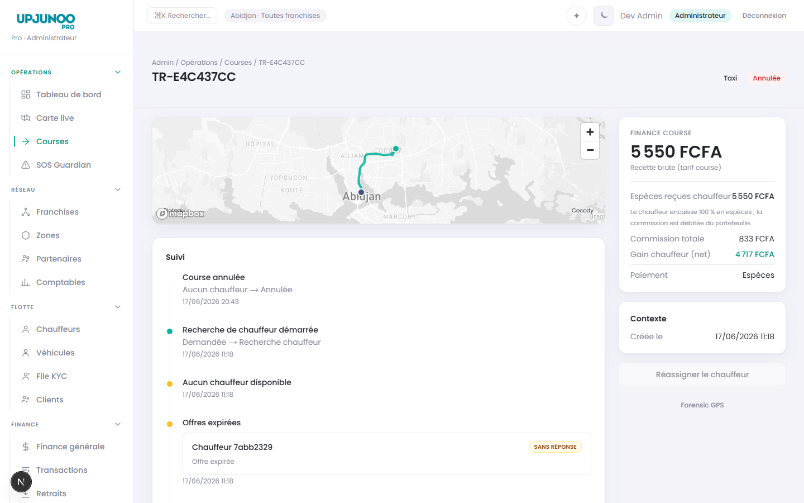
Capture — /admin/ops/trips/[id]
Guide d'utilisation
- Ouvrir la page /admin/ops/trips/[id].
- Utiliser les filtres, actions et formulaires disponibles à l'écran.
- Consulter les détails via les liens de la liste ou les onglets de la fiche.
Objectif : Écran analyse forensique — /admin/ops/trips/[id]/forensic
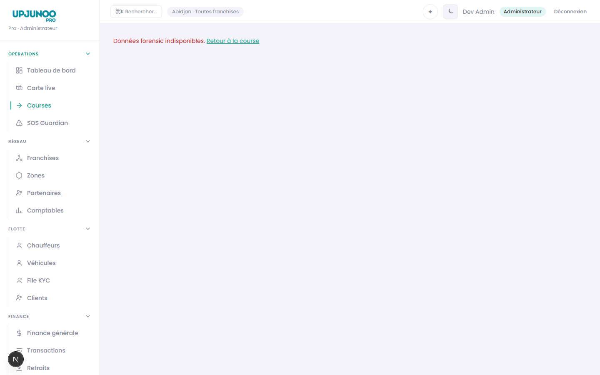
Capture — /admin/ops/trips/[id]/forensic
Guide d'utilisation
- Ouvrir la page /admin/ops/trips/[id]/forensic.
- Utiliser les filtres, actions et formulaires disponibles à l'écran.
- Consulter les détails via les liens de la liste ou les onglets de la fiche.
OPÉRATIONS
SOS Guardian
/admin/ops/sos
Objectif : Surveiller les alertes SOS et incidents sécurité chauffeurs.
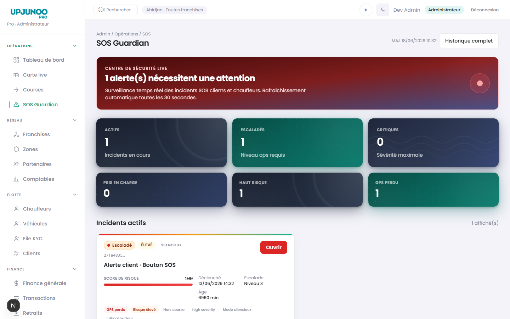
Capture — /admin/ops/sos
Guide d'utilisation
- Consulter les incidents actifs et leur localisation.
- Ouvrir le détail d'un incident pour le traitement.
OPÉRATIONS
Incidents
/admin/ops/sos/incidents
Objectif : Écran incidents — /admin/ops/sos/incidents
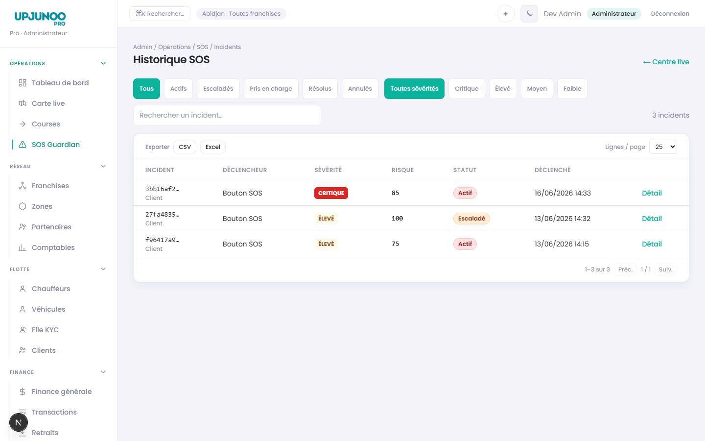
Capture — /admin/ops/sos/incidents
Guide d'utilisation
- Ouvrir la page /admin/ops/sos/incidents.
- Utiliser les filtres, actions et formulaires disponibles à l'écran.
- Consulter les détails via les liens de la liste ou les onglets de la fiche.
Objectif : Écran incidents — détail — /admin/ops/sos/incidents/[id]
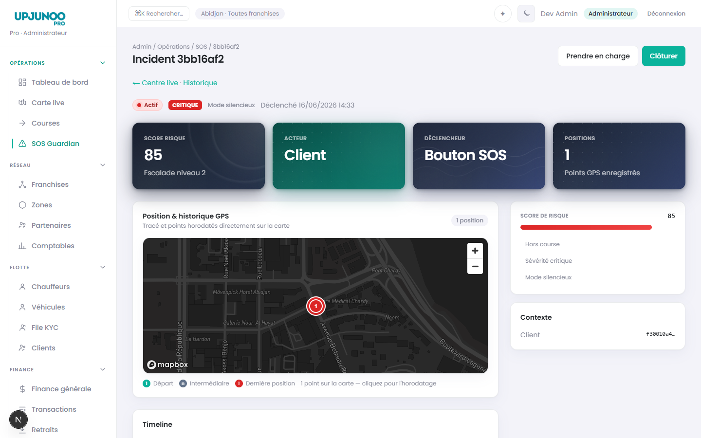
Capture — /admin/ops/sos/incidents/[id]
Guide d'utilisation
- Ouvrir la page /admin/ops/sos/incidents/[id].
- Utiliser les filtres, actions et formulaires disponibles à l'écran.
- Consulter les détails via les liens de la liste ou les onglets de la fiche.
OPÉRATIONS
Dispatch
/admin/ops/dispatch
Objectif : Écran dispatch — /admin/ops/dispatch
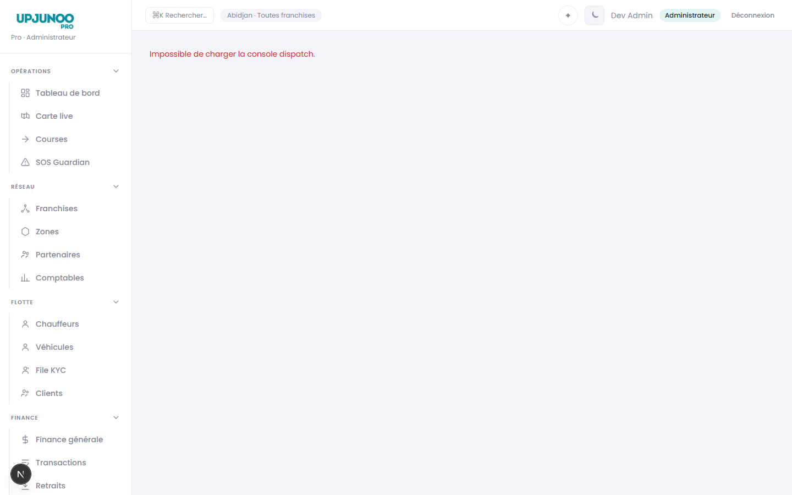
Capture — /admin/ops/dispatch
Guide d'utilisation
- Ouvrir la page /admin/ops/dispatch.
- Utiliser les filtres, actions et formulaires disponibles à l'écran.
- Consulter les détails via les liens de la liste ou les onglets de la fiche.
OPÉRATIONS
Gestion de crise
/admin/ops/crisis
Objectif : Écran gestion de crise — /admin/ops/crisis
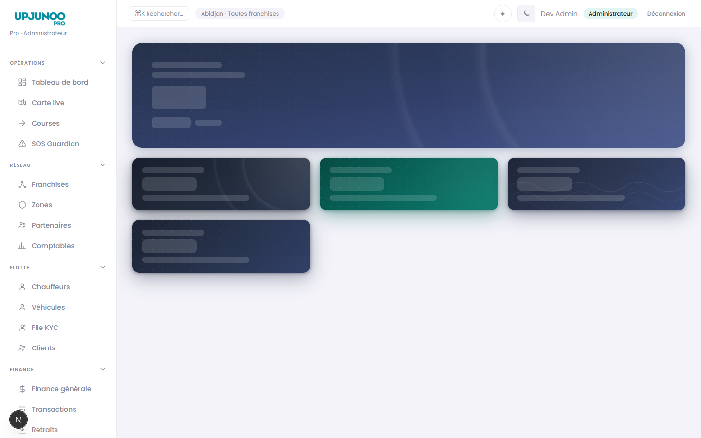
Capture — /admin/ops/crisis
Guide d'utilisation
- Ouvrir la page /admin/ops/crisis.
- Utiliser les filtres, actions et formulaires disponibles à l'écran.
- Consulter les détails via les liens de la liste ou les onglets de la fiche.
RÉSEAU
Objectif : Gérer les franchises du réseau (création, statut, territoire).
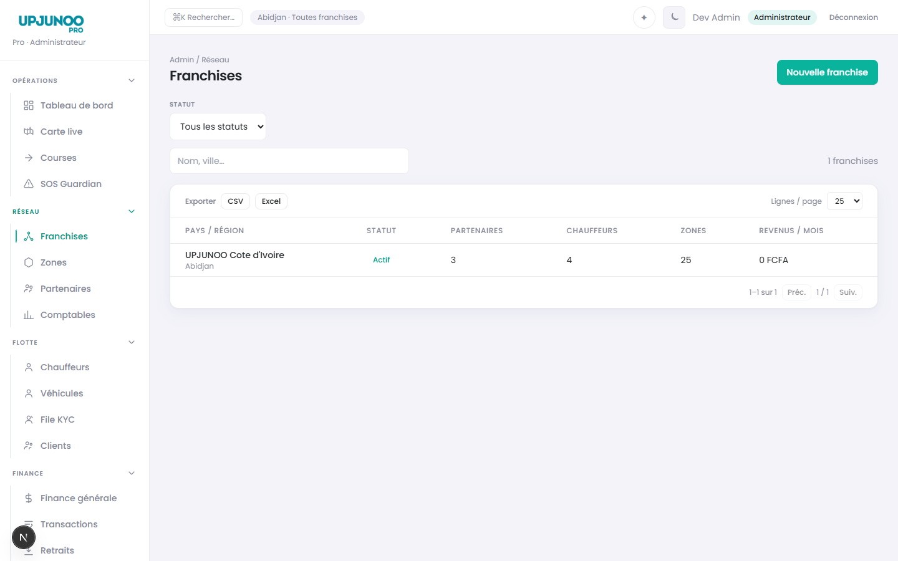
Capture — /admin/network/franchises
Guide d'utilisation
- Lister les franchises actives / suspendues.
- Créer une franchise : email portail, mot de passe, ville.
- Ouvrir une fiche pour modifier ou consulter les partenaires rattachés.
Objectif : Écran création — /admin/network/franchises/new
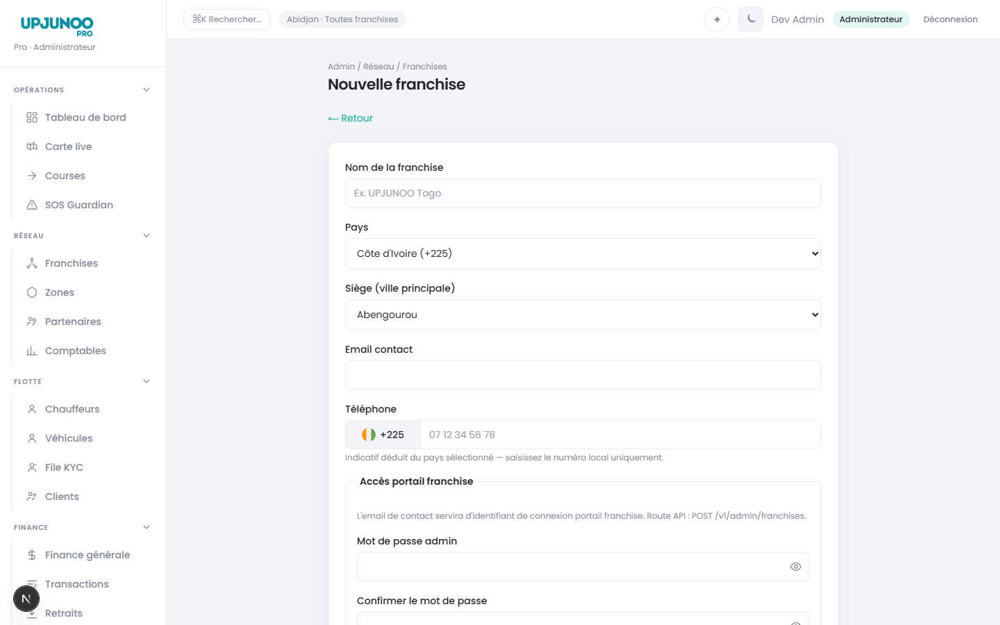
Capture — /admin/network/franchises/new
Guide d'utilisation
- Ouvrir la page /admin/network/franchises/new.
- Utiliser les filtres, actions et formulaires disponibles à l'écran.
- Consulter les détails via les liens de la liste ou les onglets de la fiche.
Objectif : Écran franchises — détail — /admin/network/franchises/[id]
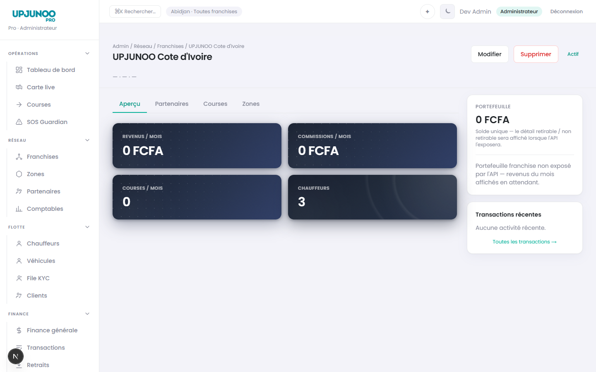
Capture — /admin/network/franchises/[id]
Guide d'utilisation
- Ouvrir la page /admin/network/franchises/[id].
- Utiliser les filtres, actions et formulaires disponibles à l'écran.
- Consulter les détails via les liens de la liste ou les onglets de la fiche.
Objectif : Écran modification — /admin/network/franchises/[id]/edit
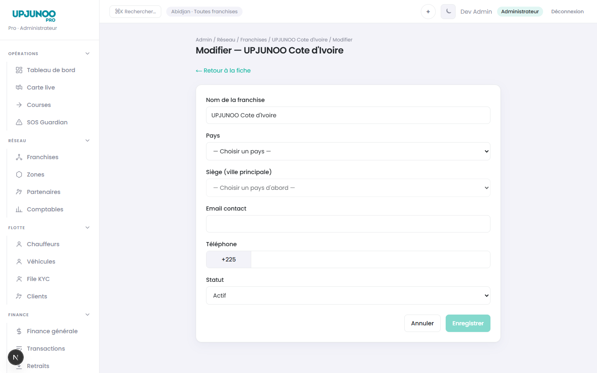
Capture — /admin/network/franchises/[id]/edit
Guide d'utilisation
- Ouvrir la page /admin/network/franchises/[id]/edit.
- Utiliser les filtres, actions et formulaires disponibles à l'écran.
- Consulter les détails via les liens de la liste ou les onglets de la fiche.
Objectif : Écran création — /admin/network/franchises/[id]/partners/new
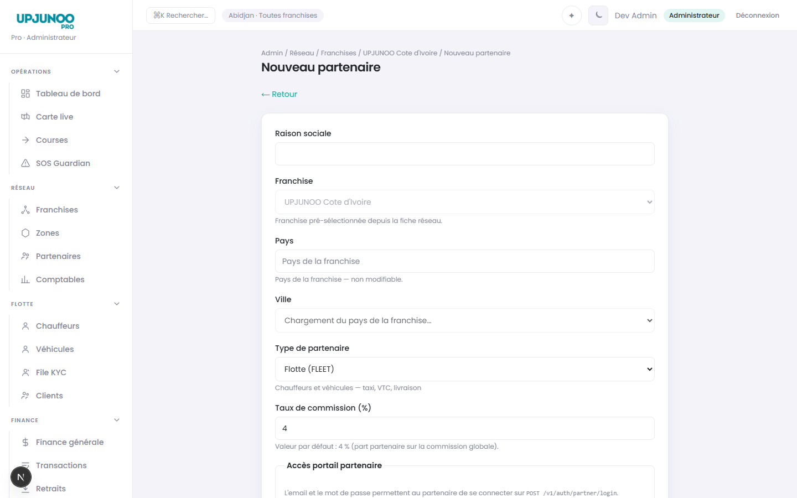
Capture — /admin/network/franchises/[id]/partners/new
Guide d'utilisation
- Ouvrir la page /admin/network/franchises/[id]/partners/new.
- Utiliser les filtres, actions et formulaires disponibles à l'écran.
- Consulter les détails via les liens de la liste ou les onglets de la fiche.
RÉSEAU
Zones
/admin/network/zones
Objectif : Définir les zones géographiques (polygones) utilisées pour le dispatch et la tarification.
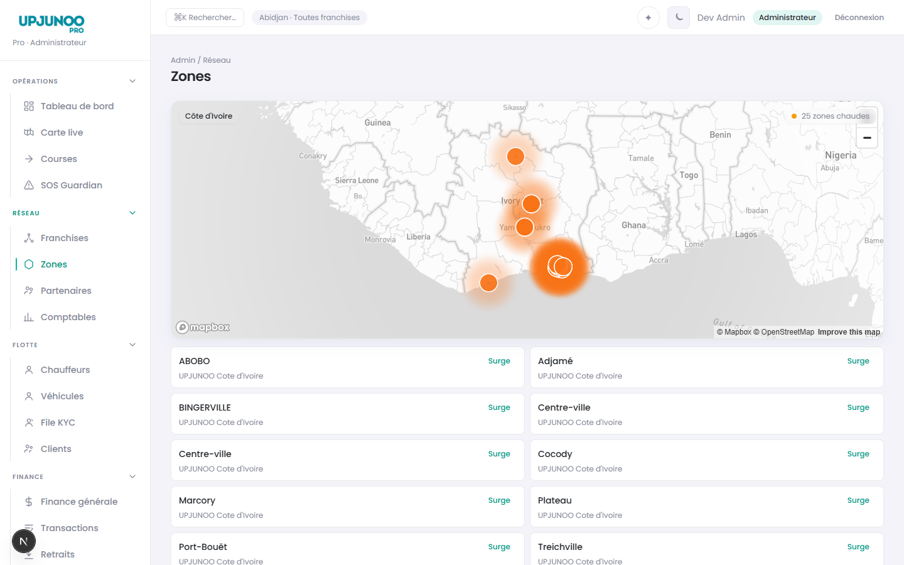
Capture — /admin/network/zones
Guide d'utilisation
- Consulter la carte des zones par ville.
- Créer ou éditer une zone : nom, polygone, franchise associée.
RÉSEAU
Création
/admin/network/zones/new
Objectif : Écran création — /admin/network/zones/new
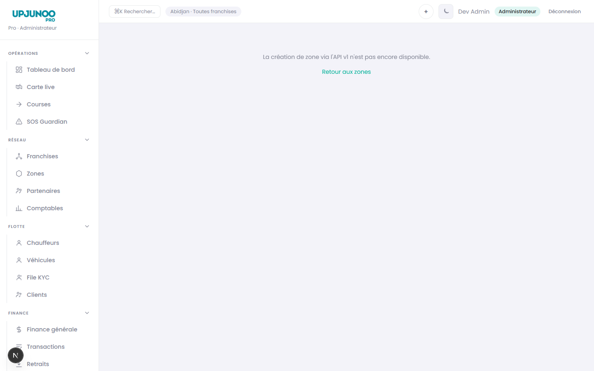
Capture — /admin/network/zones/new
Guide d'utilisation
- Ouvrir la page /admin/network/zones/new.
- Utiliser les filtres, actions et formulaires disponibles à l'écran.
- Consulter les détails via les liens de la liste ou les onglets de la fiche.
Objectif : Écran zones — détail — /admin/network/zones/[id]
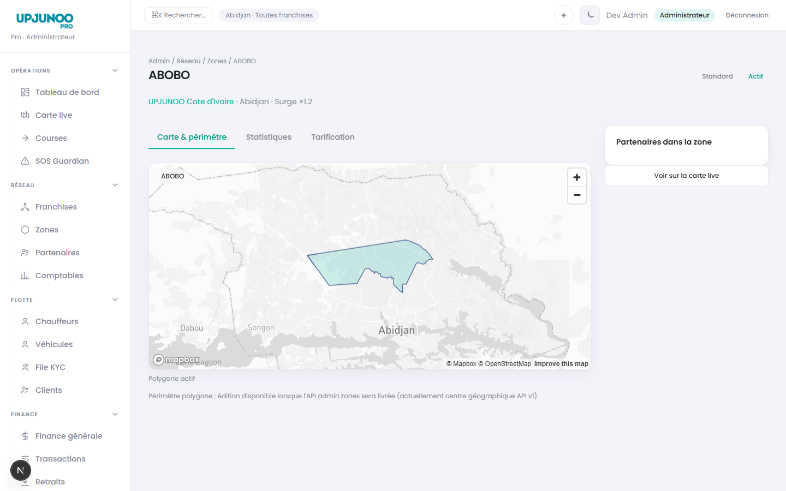
Capture — /admin/network/zones/[id]
Guide d'utilisation
- Ouvrir la page /admin/network/zones/[id].
- Utiliser les filtres, actions et formulaires disponibles à l'écran.
- Consulter les détails via les liens de la liste ou les onglets de la fiche.
RÉSEAU
Partenaires
/admin/network/partners
Objectif : Gérer les partenaires flotte (taxi, livraison, location…).
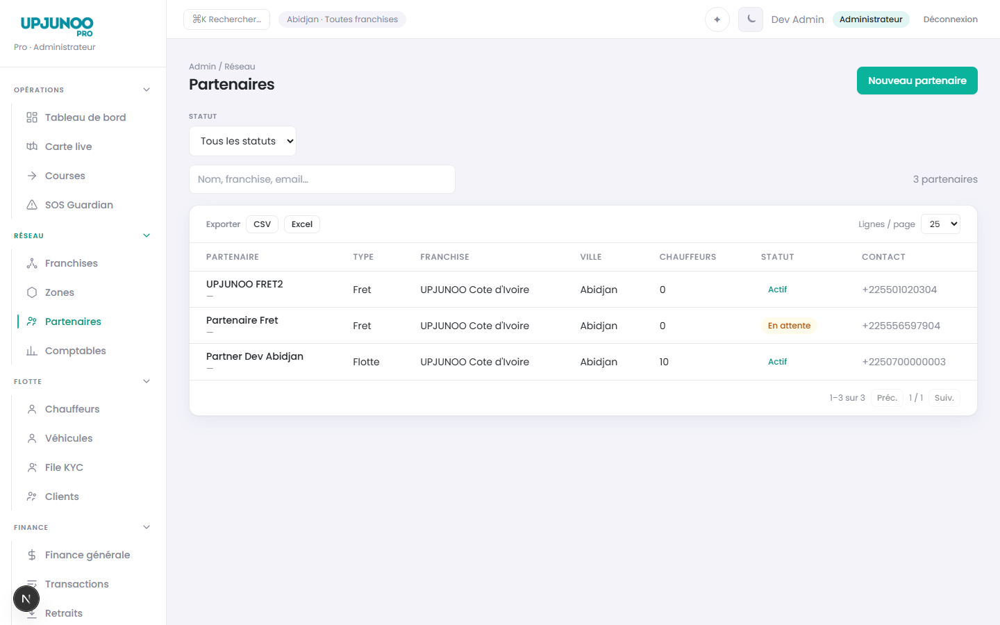
Capture — /admin/network/partners
Guide d'utilisation
- Créer un partenaire : raison sociale, commission, compte portail.
- Suspendre / activer un partenaire.
- Accéder aux chauffeurs et véhicules du partenaire depuis sa fiche.
Objectif : Écran création — /admin/network/partners/new
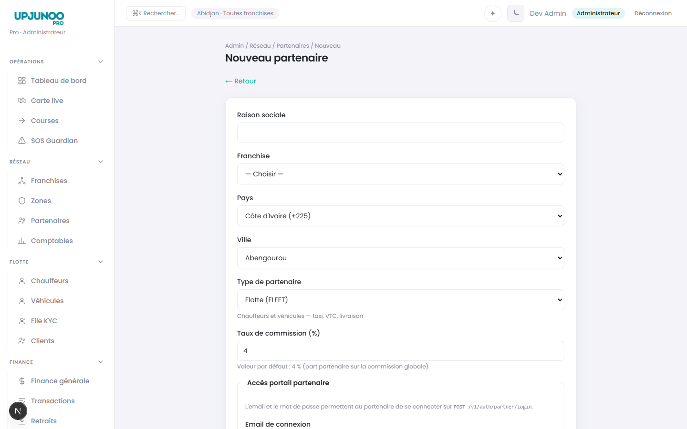
Capture — /admin/network/partners/new
Guide d'utilisation
- Ouvrir la page /admin/network/partners/new.
- Utiliser les filtres, actions et formulaires disponibles à l'écran.
- Consulter les détails via les liens de la liste ou les onglets de la fiche.
Objectif : Écran partenaires — détail — /admin/network/partners/[id]
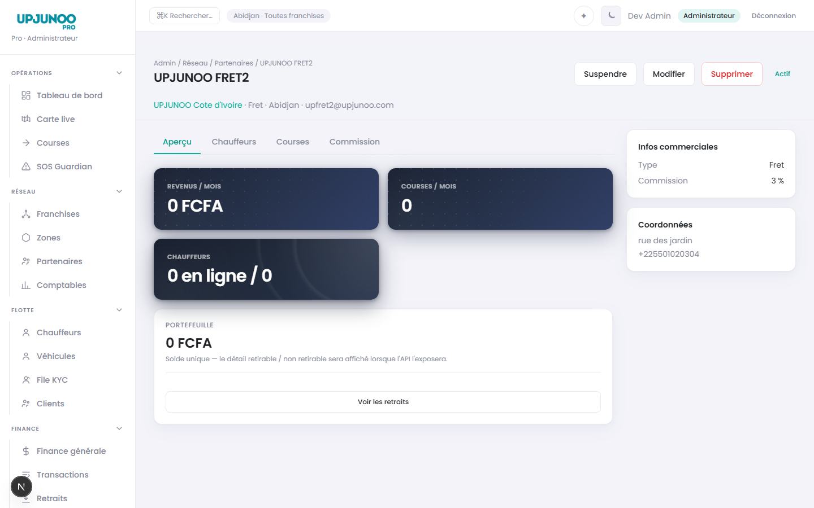
Capture — /admin/network/partners/[id]
Guide d'utilisation
- Ouvrir la page /admin/network/partners/[id].
- Utiliser les filtres, actions et formulaires disponibles à l'écran.
- Consulter les détails via les liens de la liste ou les onglets de la fiche.
Objectif : Écran modification — /admin/network/partners/[id]/edit
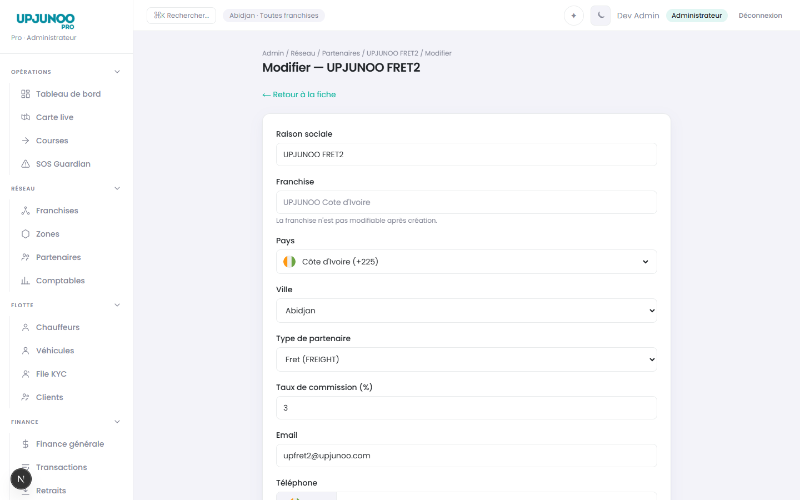
Capture — /admin/network/partners/[id]/edit
Guide d'utilisation
- Ouvrir la page /admin/network/partners/[id]/edit.
- Utiliser les filtres, actions et formulaires disponibles à l'écran.
- Consulter les détails via les liens de la liste ou les onglets de la fiche.
Objectif : Écran création — /admin/network/partners/[id]/drivers/new
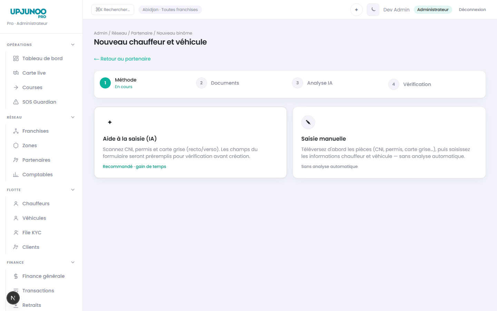
Capture — /admin/network/partners/[id]/drivers/new
Guide d'utilisation
- Ouvrir la page /admin/network/partners/[id]/drivers/new.
- Utiliser les filtres, actions et formulaires disponibles à l'écran.
- Consulter les détails via les liens de la liste ou les onglets de la fiche.
Objectif : Créer et gérer les comptes du portail comptabilité (un comptable par pays).
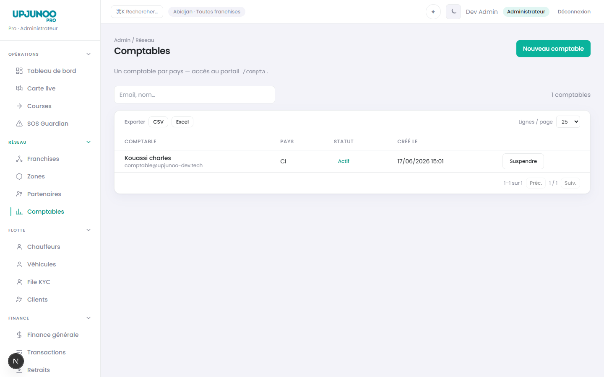
Capture — /admin/network/accountants
Guide d'utilisation
- Créer un comptable : email, mot de passe, pays géré.
- Suspendre ou réactiver un accès comptable.
Objectif : Écran création — /admin/network/accountants/new
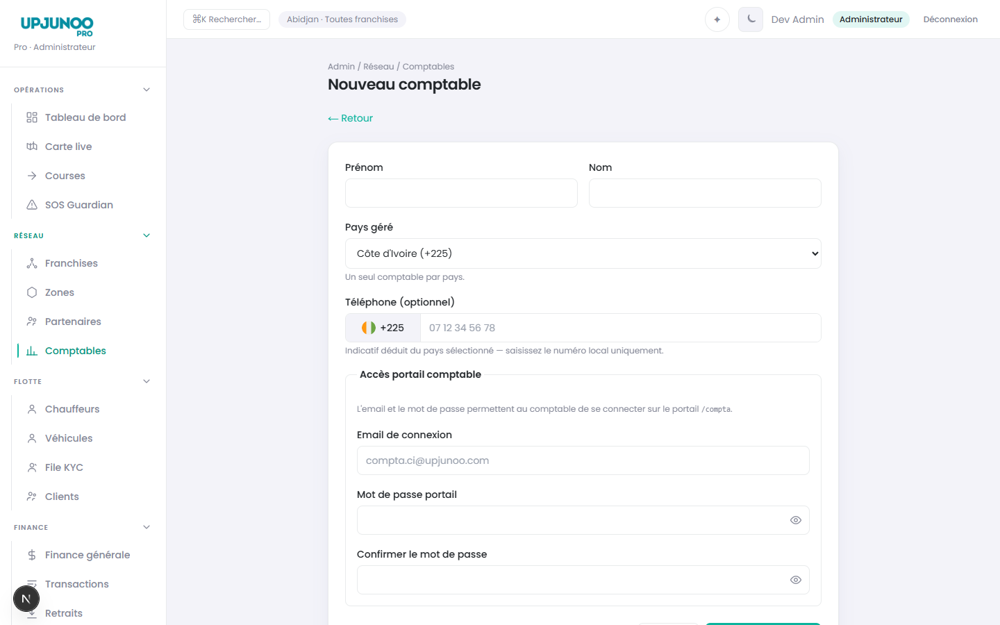
Capture — /admin/network/accountants/new
Guide d'utilisation
- Ouvrir la page /admin/network/accountants/new.
- Utiliser les filtres, actions et formulaires disponibles à l'écran.
- Consulter les détails via les liens de la liste ou les onglets de la fiche.
FLOTTE
FLOTTE
Chauffeurs
/admin/fleet/drivers
Objectif : Liste et fiches chauffeurs : KYC, disponibilité, wallet, historique.
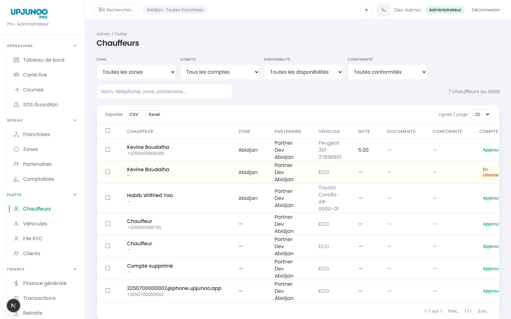
Capture — /admin/fleet/drivers
Guide d'utilisation
- Filtrer par zone, statut compte, disponibilité, conformité.
- Ouvrir une fiche : onglets KYC, activité, wallet.
- Approuver, suspendre ou transférer un chauffeur vers un autre partenaire.
Objectif : Écran chauffeurs — détail — /admin/fleet/drivers/[id]
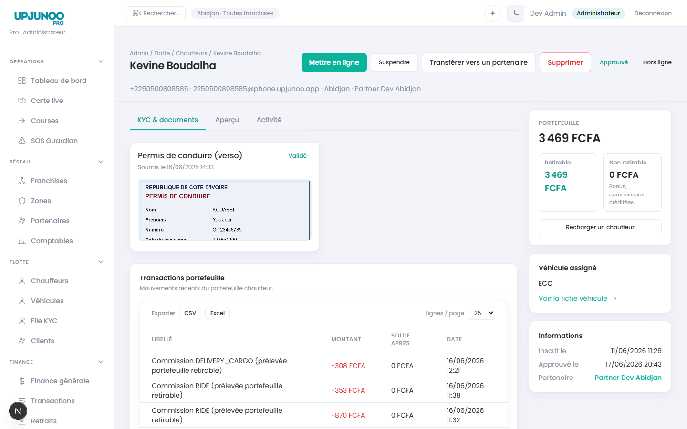
Capture — /admin/fleet/drivers/[id]
Guide d'utilisation
- Ouvrir la page /admin/fleet/drivers/[id].
- Utiliser les filtres, actions et formulaires disponibles à l'écran.
- Consulter les détails via les liens de la liste ou les onglets de la fiche.
FLOTTE
Véhicules
/admin/fleet/vehicles
Objectif : Parc véhicules : immatriculation, catégorie, chauffeur assigné.
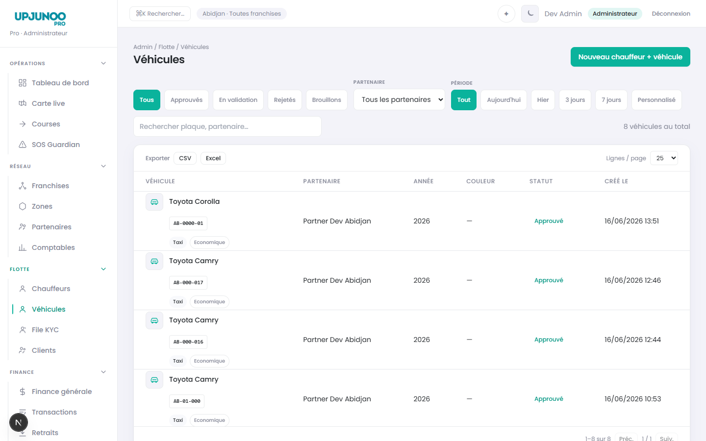
Capture — /admin/fleet/vehicles
Guide d'utilisation
- Rechercher par plaque ou partenaire.
- Créer un véhicule et l'assigner à un chauffeur.
Objectif : Écran création — /admin/fleet/vehicles/new
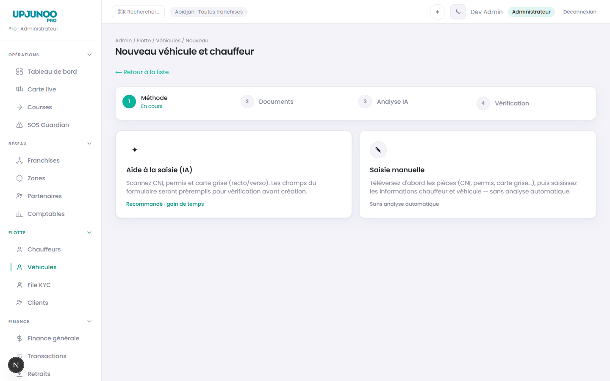
Capture — /admin/fleet/vehicles/new
Guide d'utilisation
- Ouvrir la page /admin/fleet/vehicles/new.
- Utiliser les filtres, actions et formulaires disponibles à l'écran.
- Consulter les détails via les liens de la liste ou les onglets de la fiche.
Objectif : Écran véhicules — détail — /admin/fleet/vehicles/[id]
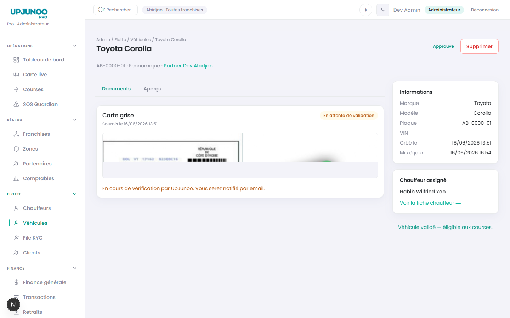
Capture — /admin/fleet/vehicles/[id]
Guide d'utilisation
- Ouvrir la page /admin/fleet/vehicles/[id].
- Utiliser les filtres, actions et formulaires disponibles à l'écran.
- Consulter les détails via les liens de la liste ou les onglets de la fiche.
FLOTTE
File KYC
/admin/fleet/kyc
Objectif : Valider les documents d'identité et permis en attente.
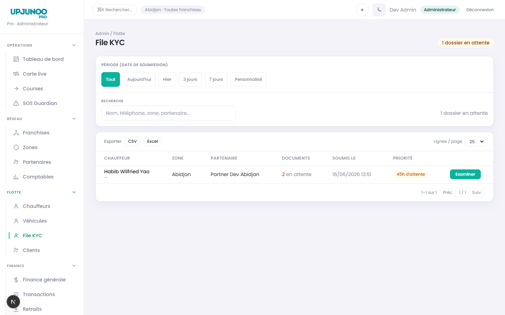
Capture — /admin/fleet/kyc
Guide d'utilisation
- Traiter la file par ordre d'ancienneté.
- Approuver ou rejeter document par document avec motif.
FLOTTE
Clients
/admin/fleet/clients
Objectif : Consulter les comptes passagers et leur historique.
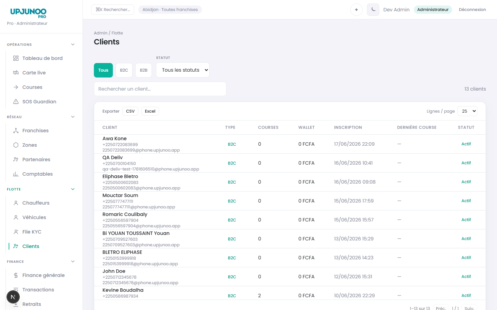
Capture — /admin/fleet/clients
Guide d'utilisation
- Rechercher un client par nom ou téléphone.
- Ouvrir la fiche pour voir les courses passées.
Objectif : Écran clients — détail — /admin/fleet/clients/[id]
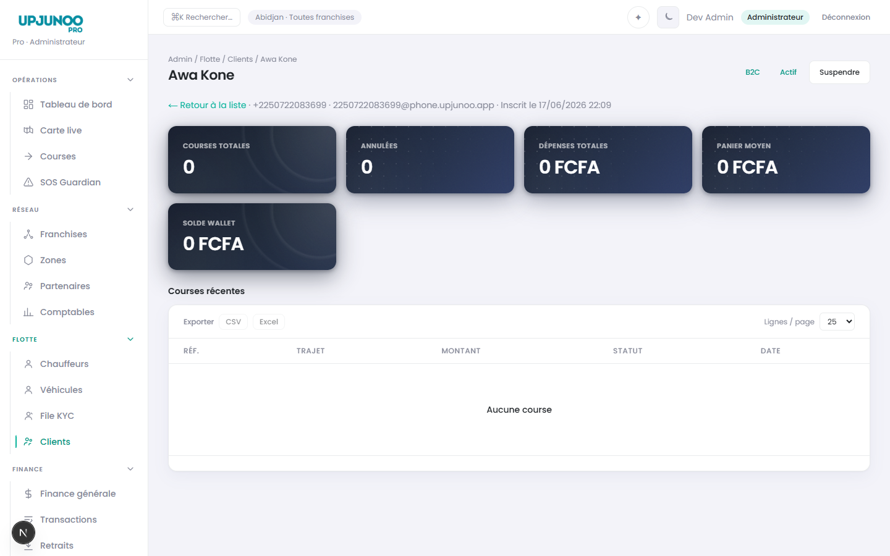
Capture — /admin/fleet/clients/[id]
Guide d'utilisation
- Ouvrir la page /admin/fleet/clients/[id].
- Utiliser les filtres, actions et formulaires disponibles à l'écran.
- Consulter les détails via les liens de la liste ou les onglets de la fiche.
FINANCE
FINANCE
Finance générale
/admin/finance
Objectif : Hub finance : synthèse soldes, flux et accès aux sous-modules.
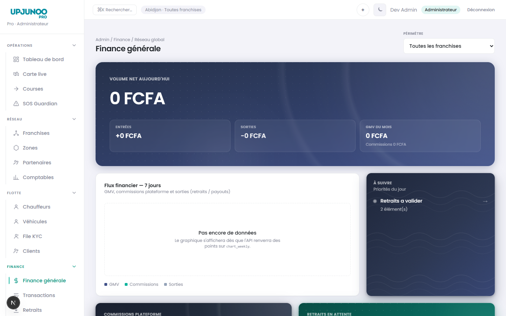
Capture — /admin/finance
Guide d'utilisation
- Vue d'ensemble des indicateurs financiers.
- Naviguer vers transactions, retraits, portefeuilles, etc.
Objectif : Journal des mouvements financiers (crédits, débits, paiements).
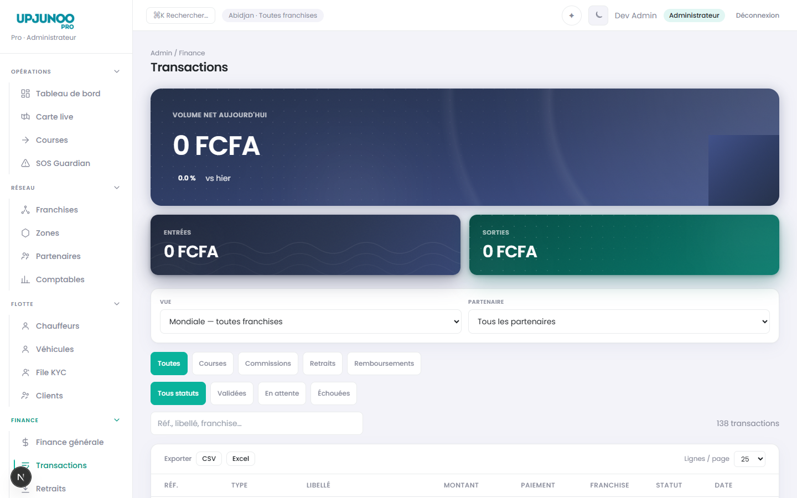
Capture — /admin/finance/transactions
Guide d'utilisation
- Filtrer par type, période, montant.
- Ouvrir une transaction pour le détail et la réconciliation.
Objectif : Écran transactions — détail — /admin/finance/transactions/[id]
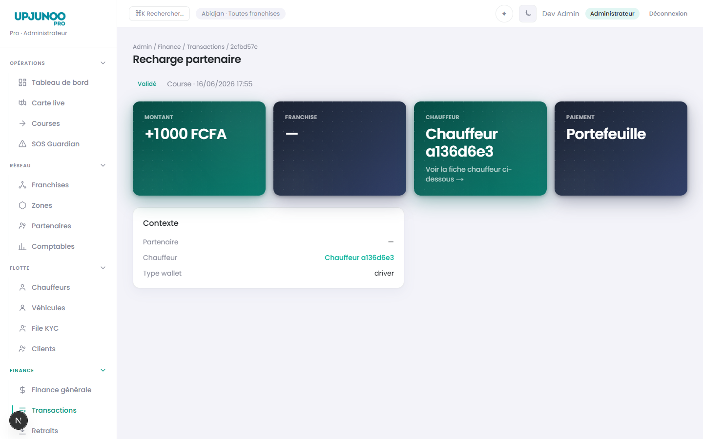
Capture — /admin/finance/transactions/[id]
Guide d'utilisation
- Ouvrir la page /admin/finance/transactions/[id].
- Utiliser les filtres, actions et formulaires disponibles à l'écran.
- Consulter les détails via les liens de la liste ou les onglets de la fiche.
Objectif : Traiter les demandes de retrait chauffeurs et partenaires.
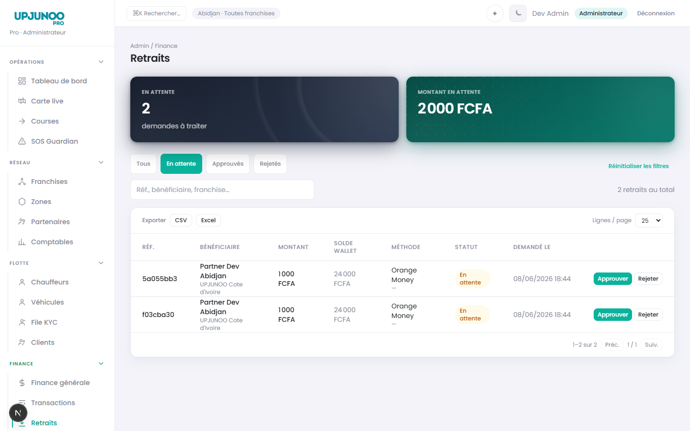
Capture — /admin/finance/withdrawals
Guide d'utilisation
- Filtrer les retraits en attente.
- Approuver ou rejeter avec justification.
Objectif : Écran retraits — détail — /admin/finance/withdrawals/[id]
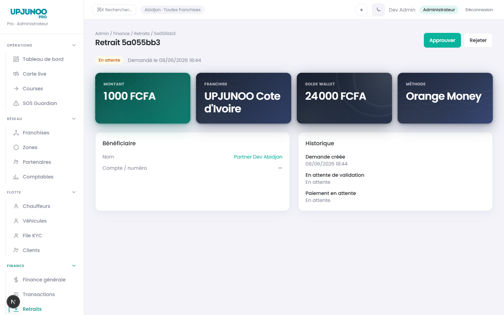
Capture — /admin/finance/withdrawals/[id]
Guide d'utilisation
- Ouvrir la page /admin/finance/withdrawals/[id].
- Utiliser les filtres, actions et formulaires disponibles à l'écran.
- Consulter les détails via les liens de la liste ou les onglets de la fiche.
FINANCE
Portefeuilles
/admin/finance/wallets
Objectif : Soldes des portefeuilles par acteur (chauffeur, partenaire, franchise).
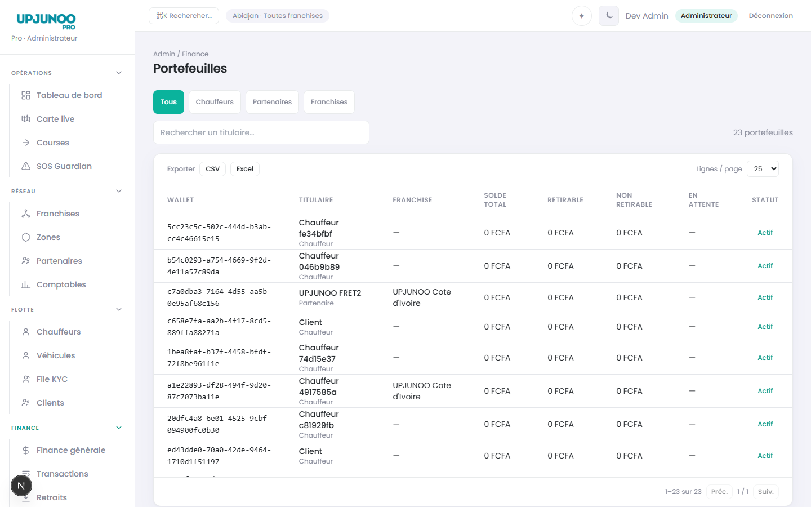
Capture — /admin/finance/wallets
Guide d'utilisation
- Rechercher un portefeuille par propriétaire.
- Consulter solde disponible / non retirable.
FINANCE
Ledger comptable
/admin/finance/ledger
Objectif : Grand-livre comptable admin (écritures débit/crédit).
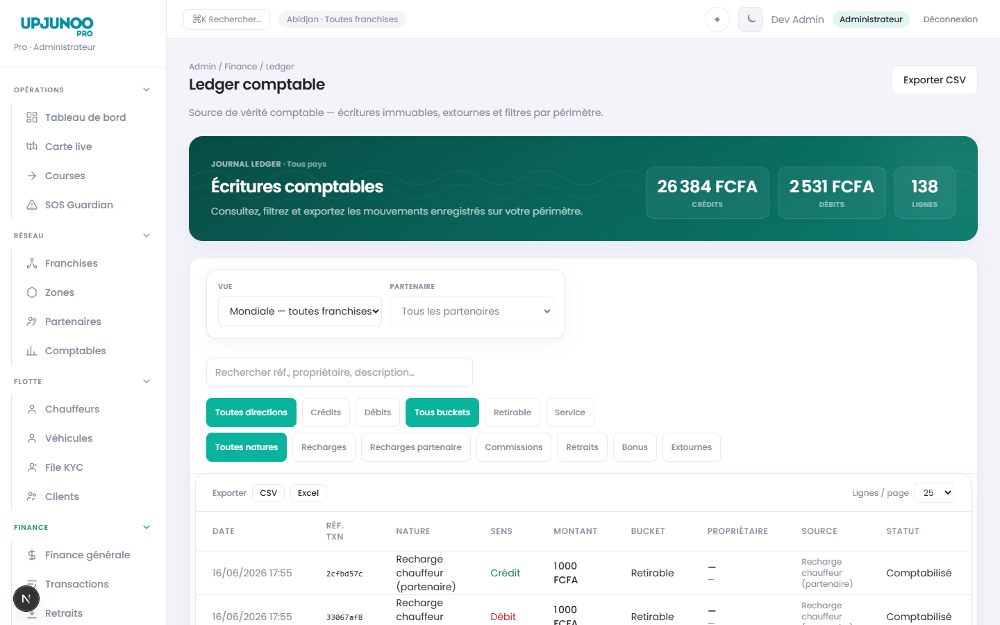
Capture — /admin/finance/ledger
Guide d'utilisation
- Filtrer par bucket, type d'écriture, période.
- Exporter pour contrôle comptable.
Objectif : Recharger le wallet d'un chauffeur depuis le back-office.
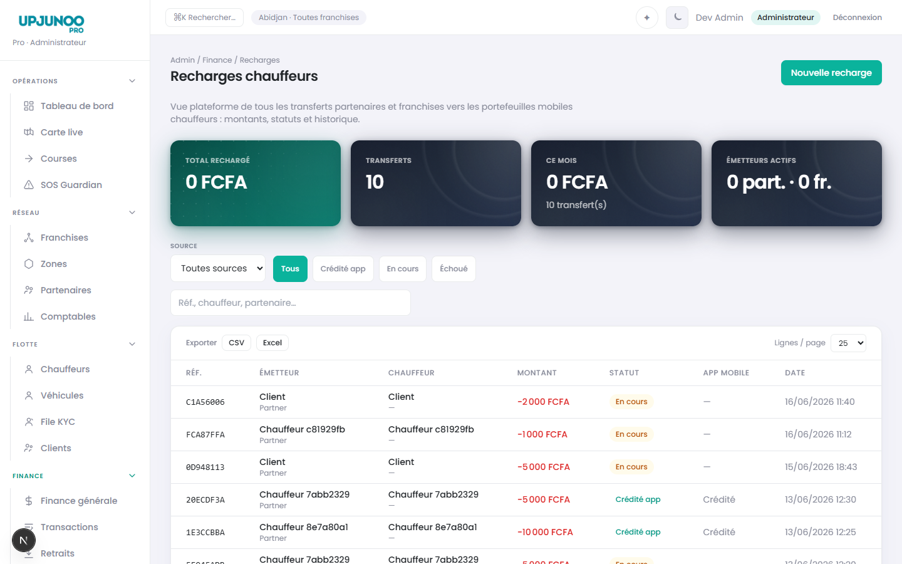
Capture — /admin/finance/driver-transfers
Guide d'utilisation
- Sélectionner chauffeur et montant.
- Confirmer la recharge — mouvement tracé au ledger.
Objectif : Suivi des commissions prélevées sur les courses.
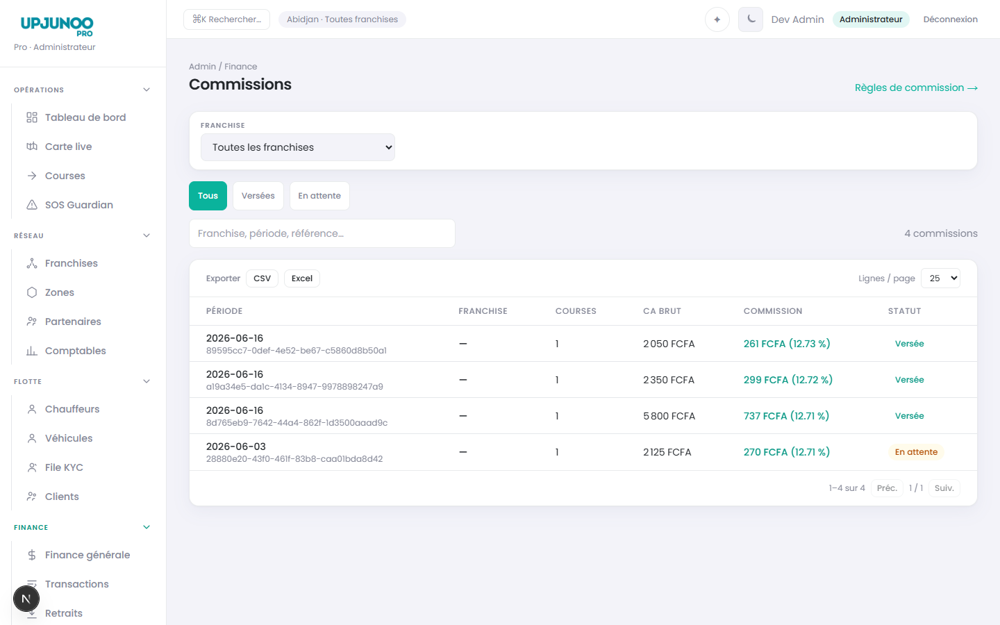
Capture — /admin/finance/commissions
Guide d'utilisation
- Analyser les commissions par période ou partenaire.
Objectif : Écran règles de commission — /admin/finance/commission-rules
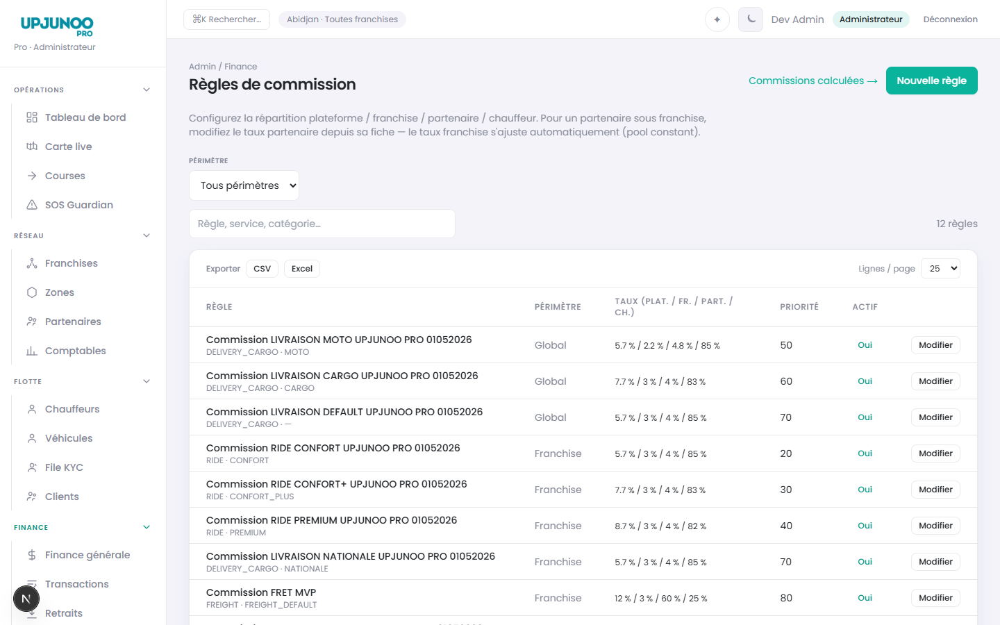
Capture — /admin/finance/commission-rules
Guide d'utilisation
- Ouvrir la page /admin/finance/commission-rules.
- Utiliser les filtres, actions et formulaires disponibles à l'écran.
- Consulter les détails via les liens de la liste ou les onglets de la fiche.
Objectif : Écran création — /admin/finance/commission-rules/new
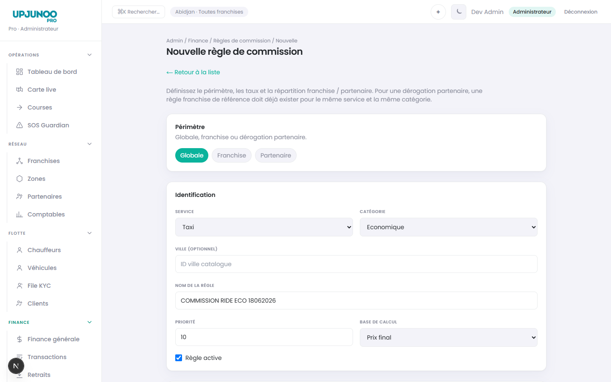
Capture — /admin/finance/commission-rules/new
Guide d'utilisation
- Ouvrir la page /admin/finance/commission-rules/new.
- Utiliser les filtres, actions et formulaires disponibles à l'écran.
- Consulter les détails via les liens de la liste ou les onglets de la fiche.
Objectif : Écran modification — /admin/finance/commission-rules/[id]/edit
Capture non disponible
Guide d'utilisation
- Ouvrir la page /admin/finance/commission-rules/[id]/edit.
- Utiliser les filtres, actions et formulaires disponibles à l'écran.
- Consulter les détails via les liens de la liste ou les onglets de la fiche.
Objectif : Écran règles de bonus — /admin/finance/bonus-rules
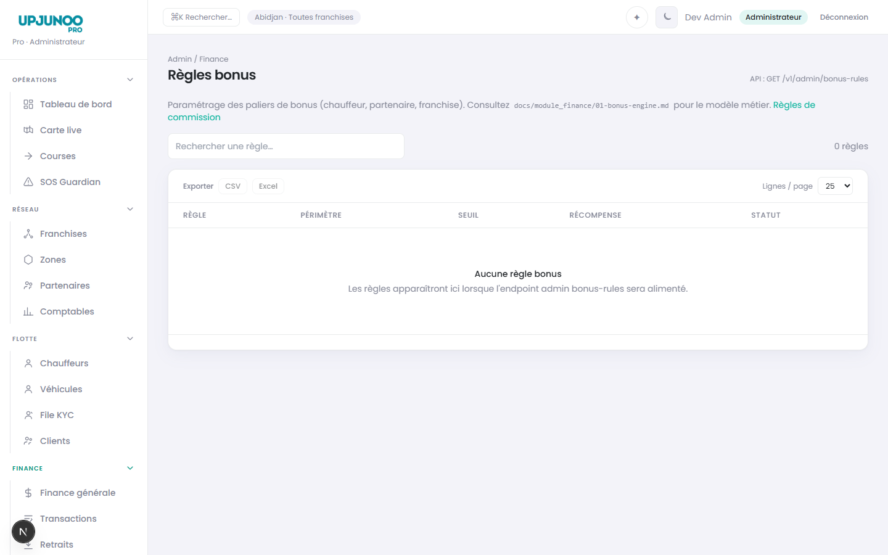
Capture — /admin/finance/bonus-rules
Guide d'utilisation
- Ouvrir la page /admin/finance/bonus-rules.
- Utiliser les filtres, actions et formulaires disponibles à l'écran.
- Consulter les détails via les liens de la liste ou les onglets de la fiche.
Objectif : Rapprocher les flux cash / mobile money avec le ledger.
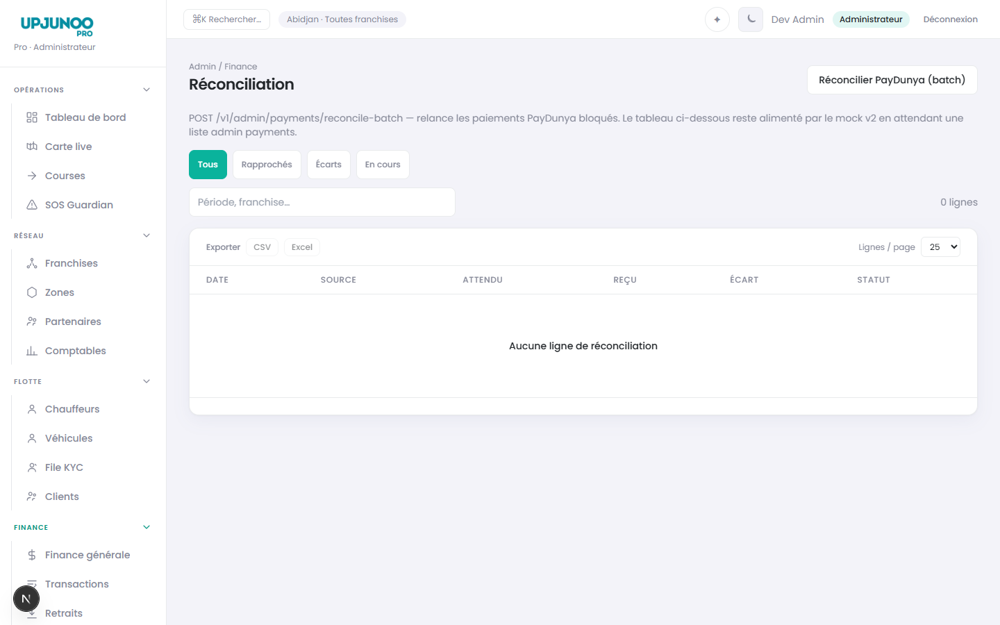
Capture — /admin/finance/reconciliation
Guide d'utilisation
- Identifier les écarts non justifiés.
- Marquer les écarts comme traités.
PARAMÈTRES
Objectif : Configurer le moteur de dispatch (vagues, priorités, zones).
Capture — /admin/settings/dispatch-rules
Guide d'utilisation
- Ajuster les paramètres globaux et par pays.
PARAMÈTRES
Rôles
/admin/settings/roles
Objectif : Gestion RBAC — permissions par rôle admin.
Capture — /admin/settings/roles
Guide d'utilisation
- Créer un rôle et cocher les permissions module par module.
Objectif : Écran création — /admin/settings/roles/new
Capture — /admin/settings/roles/new
Guide d'utilisation
- Ouvrir la page /admin/settings/roles/new.
- Utiliser les filtres, actions et formulaires disponibles à l'écran.
- Consulter les détails via les liens de la liste ou les onglets de la fiche.
Objectif : Écran rôles — détail — /admin/settings/roles/[id]
Capture — /admin/settings/roles/[id]
Guide d'utilisation
- Ouvrir la page /admin/settings/roles/[id].
- Utiliser les filtres, actions et formulaires disponibles à l'écran.
- Consulter les détails via les liens de la liste ou les onglets de la fiche.
PARAMÈTRES
Tarification
/admin/settings/pricing
Objectif : Grilles tarifaires par zone et catégorie véhicule.
Capture — /admin/settings/pricing
Guide d'utilisation
- Créer / modifier une règle de prix.
- Tester l'impact sur une estimation.
Objectif : Écran création — /admin/settings/pricing/new
Capture — /admin/settings/pricing/new
Guide d'utilisation
- Ouvrir la page /admin/settings/pricing/new.
- Utiliser les filtres, actions et formulaires disponibles à l'écran.
- Consulter les détails via les liens de la liste ou les onglets de la fiche.
Objectif : Écran tarification — détail — /admin/settings/pricing/[id]
Capture — /admin/settings/pricing/[id]
Guide d'utilisation
- Ouvrir la page /admin/settings/pricing/[id].
- Utiliser les filtres, actions et formulaires disponibles à l'écran.
- Consulter les détails via les liens de la liste ou les onglets de la fiche.
Objectif : Écran plafonds finance — /admin/settings/finance-caps
Capture — /admin/settings/finance-caps
Guide d'utilisation
- Ouvrir la page /admin/settings/finance-caps.
- Utiliser les filtres, actions et formulaires disponibles à l'écran.
- Consulter les détails via les liens de la liste ou les onglets de la fiche.
Objectif : Écran intégrations — /admin/settings/integrations
Capture — /admin/settings/integrations
Guide d'utilisation
- Ouvrir la page /admin/settings/integrations.
- Utiliser les filtres, actions et formulaires disponibles à l'écran.
- Consulter les détails via les liens de la liste ou les onglets de la fiche.
PARAMÈTRES
Météo
/admin/settings/weather
Objectif : Écran météo — /admin/settings/weather
Capture — /admin/settings/weather
Guide d'utilisation
- Ouvrir la page /admin/settings/weather.
- Utiliser les filtres, actions et formulaires disponibles à l'écran.
- Consulter les détails via les liens de la liste ou les onglets de la fiche.
PARAMÈTRES
Audit
/admin/settings/audit
Objectif : Écran audit — /admin/settings/audit
Capture — /admin/settings/audit
Guide d'utilisation
- Ouvrir la page /admin/settings/audit.
- Utiliser les filtres, actions et formulaires disponibles à l'écran.
- Consulter les détails via les liens de la liste ou les onglets de la fiche.
PARAMÈTRES
Général
/admin/settings/general
Objectif : Écran général — /admin/settings/general
Capture — /admin/settings/general
Guide d'utilisation
- Ouvrir la page /admin/settings/general.
- Utiliser les filtres, actions et formulaires disponibles à l'écran.
- Consulter les détails via les liens de la liste ou les onglets de la fiche.
Objectif : Écran dispatchers — /admin/settings/dispatchers
Capture — /admin/settings/dispatchers
Guide d'utilisation
- Ouvrir la page /admin/settings/dispatchers.
- Utiliser les filtres, actions et formulaires disponibles à l'écran.
- Consulter les détails via les liens de la liste ou les onglets de la fiche.
Objectif : Écran création — /admin/settings/dispatchers/new
Capture — /admin/settings/dispatchers/new
Guide d'utilisation
- Ouvrir la page /admin/settings/dispatchers/new.
- Utiliser les filtres, actions et formulaires disponibles à l'écran.
- Consulter les détails via les liens de la liste ou les onglets de la fiche.
COMPTABILITÉ
COMPTABILITÉ
Tableau de bord comptable
/compta
Objectif : KPIs comptables du pays : entrées/sorties, commissions, écarts.
Capture — /compta
Guide d'utilisation
- Vérifier la période en cours et son statut (ouverte / clôturée).
- Surveiller retraits en attente et wallets sous le minimum dispatch.
COMPTABILITÉ
Flux entrées / sorties
/compta/flows
Objectif : Visualiser les flux financiers entrants et sortants du pays.
Capture — /compta/flows
Guide d'utilisation
- Filtrer par période et type de flux.
- Analyser les tendences crédit vs débit.
COMPTABILITÉ
Journal comptable
/compta/ledger
Objectif : Grand-livre filtré sur le pays du comptable.
Capture — /compta/ledger
Guide d'utilisation
- Consulter les écritures avec filtres wallet, direction, service.
- Exporter en CSV pour logiciel comptable externe.
- Extourner une écriture erronée (avec motif obligatoire).
COMPTABILITÉ
Commissions & bénéfices
/compta/commissions
Objectif : Suivi des commissions et marges sur le périmètre pays.
Capture — /compta/commissions
Guide d'utilisation
- Vérifier commissions débitées vs en attente.
COMPTABILITÉ
Portefeuilles
/compta/wallets
Objectif : Soldes portefeuilles des acteurs du pays.
Capture — /compta/wallets
Guide d'utilisation
- Rechercher un wallet par chauffeur ou partenaire.
COMPTABILITÉ
Réconciliation
/compta/reconciliation
Objectif : Écarts de rapprochement cash / paiements.
Capture — /compta/reconciliation
Guide d'utilisation
- Traiter les écarts ouverts.
- Justifier ou corriger avant clôture de période.
COMPTABILITÉ
Clôtures & périodes
/compta/periods
Objectif : Clôturer et verrouiller une période comptable mensuelle.
Capture — /compta/periods
Guide d'utilisation
- Vérifier les contrôles (retraits ouverts, écarts).
- Clôturer la période puis verrouiller définitivement.